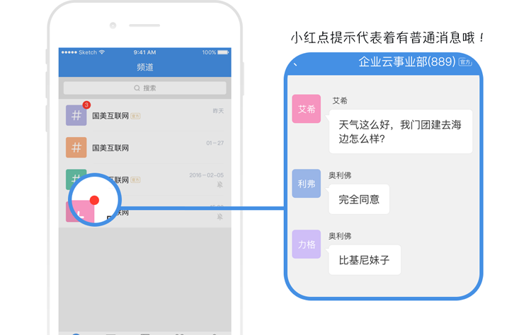

Aeromind1.2.0 for Android 全新上线团队智能频道功能！
发布日期：待定 发布版本：v1.2.0
1.什么是频道？
频道，全称 团队智能频道，是针对企业场景量身设计的提高沟通效率、简化管理的新型多人沟通及协作方式。频道成员免维护自动更新，人数不设上限；消息云端永久保存，新成员可直接查看历史数据；更简洁准确的消息提醒方式减少无关信息干扰，节省流量；聚合多种应用信息，一处登录全局处理等等多种特色功能。
2.频道成员人数不设上限
3.频道成员可根据条件自动匹配，无须手动维护。且与组织架构动态统一（离职即退出去，入职即加入）


4.频道消息，历史记录，过程文档，可永久保存。新人入频道可直接查阅相关历史信息
5.频道里的消息，可以点赞哦
6.频道分为官方频道和个人频道。本次版本只包含官方频道，是由企业管理员创建和维护的。而个人频道是由我们每个人自己创建的~后续版本会更新。

7.频道默认只提醒你特殊类型的重要消息，避免无效消息对您的干扰以及流量的耗费。

8.频道的好，你需要慢慢发现~
频道后续会陆续推出更多有趣好玩，又提高工作效率的功能哦，如主题消息，频道归档，还会整合其他应用,如wiki，jira，邮箱等，一站式在频道中处理各类办公信息。